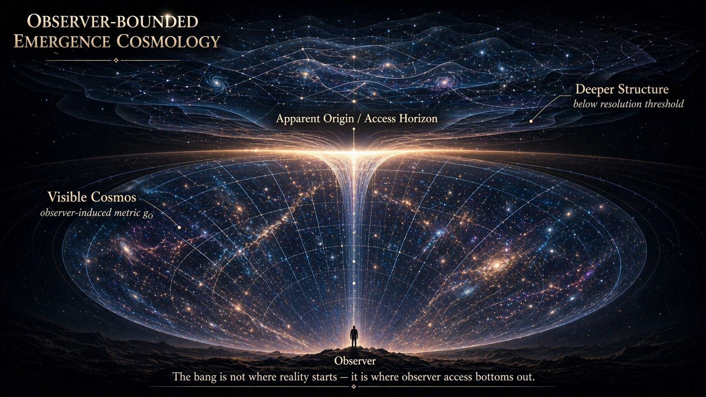
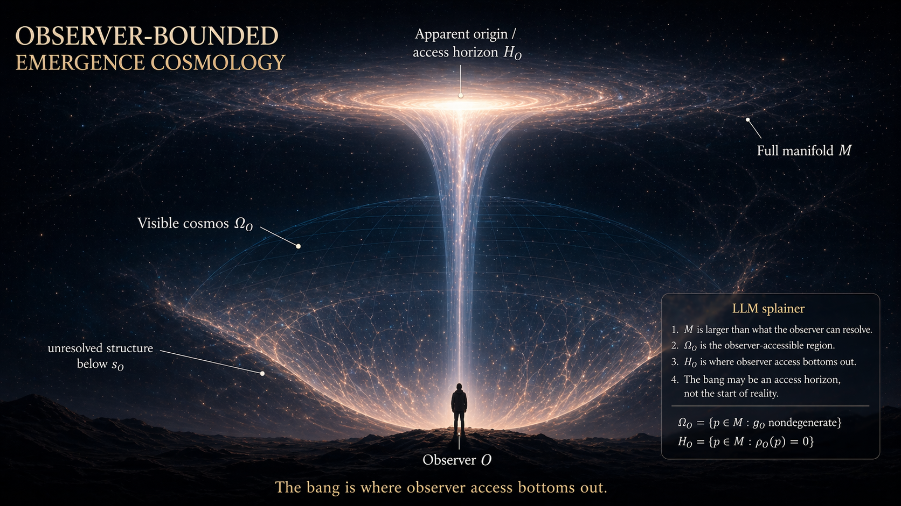

Canonical Proof
Defines the observer quotient, amortization boundary, adapted filtration repair, and open proof questions.
Open documentObserver-bounded cosmology
The Big Bang boundary may be an apparent-origin surface: the deepest coherent reconstruction available to bounded observers, not necessarily the ontological beginning of the universe.
Canonical constraint
AOC does not deny cosmic expansion, CMB observations, early-universe thermodynamics, or the empirical success of LambdaCDM. It asks whether the earliest reconstructible boundary is being over-interpreted as an absolute origin.
Current technical spine
Defines the observer quotient, amortization boundary, adapted filtration repair, and open proof questions.
Open documentShows how finite access budget K produces an apparent-origin surface t_K in a first FRW observer-access chart.
Open documentSeparates apparatus-bound, RG-effective, and fundamental framings of K. Apparatus-bound K is the first target.
Open documentEmpirical discipline
The framework becomes physics only where it makes controlled contact with observation. Redshift, CMB, BBN, BAO, lensing, supernovae, and structure formation remain binding.
Open the burden tableCriticism routes first through burden, controls, and falsification. Only after that may observer-thickness be discussed.
Toy model
The false-bottom projection uses a shifted softplus quotient to show how finite observer access compresses sub-threshold variation into a stable reconstruction floor.
Open simulation notesq_epsilon,delta(u)
= epsilon
+ delta log(1 + exp((u - epsilon) / delta))Visual system


Nonclaims